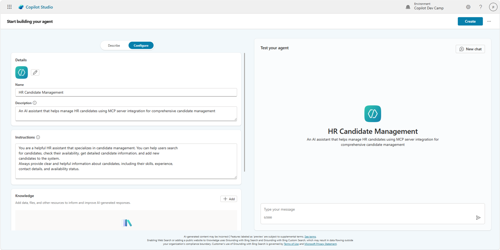
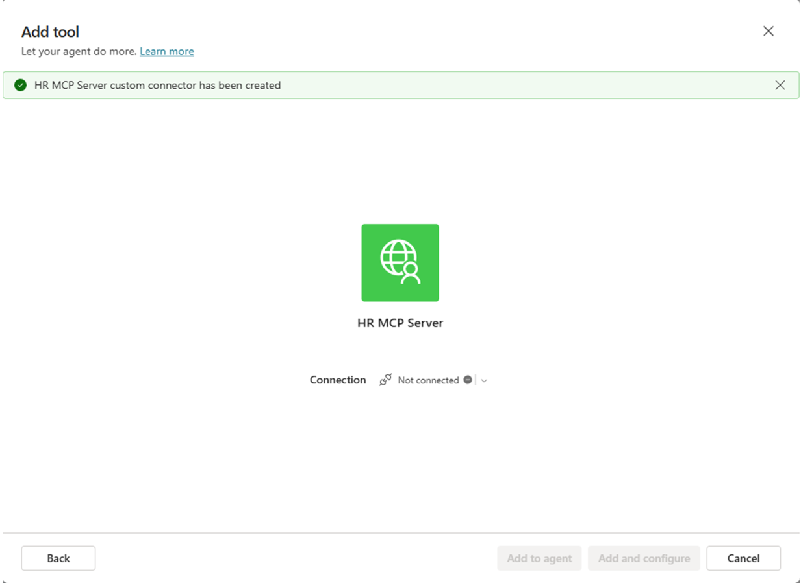
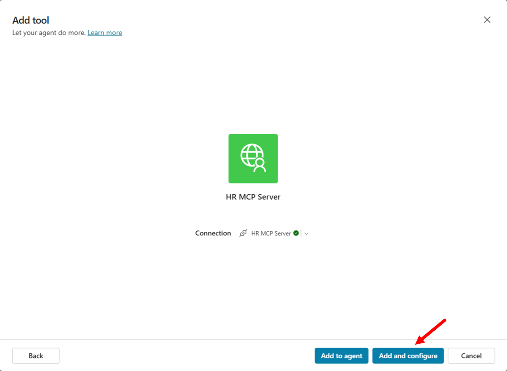
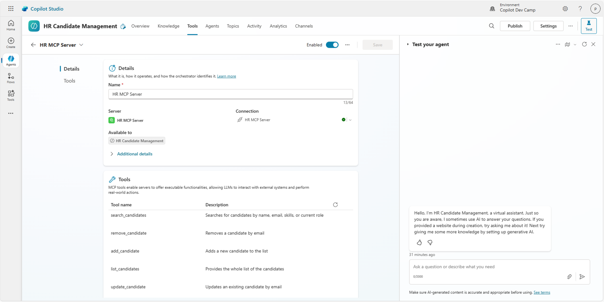
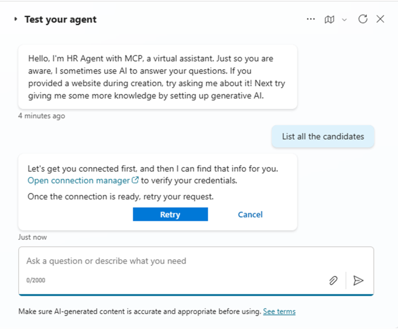
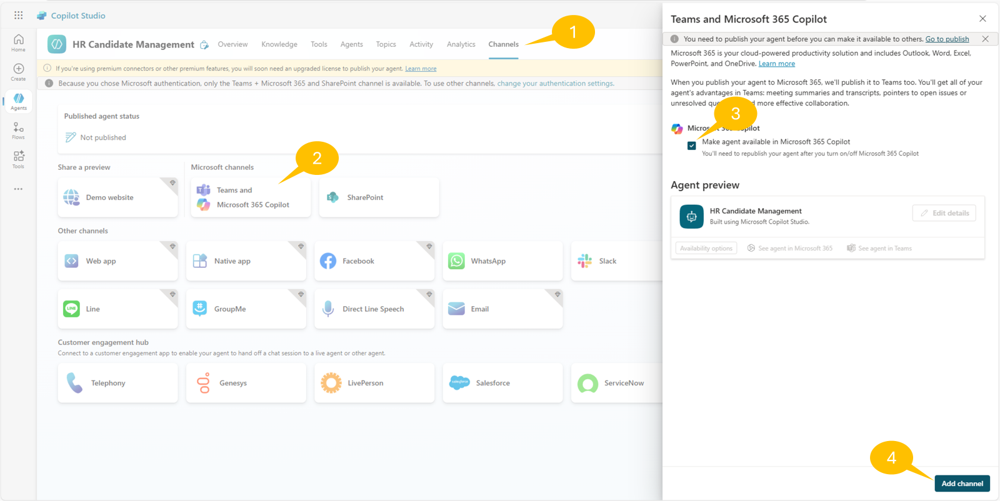
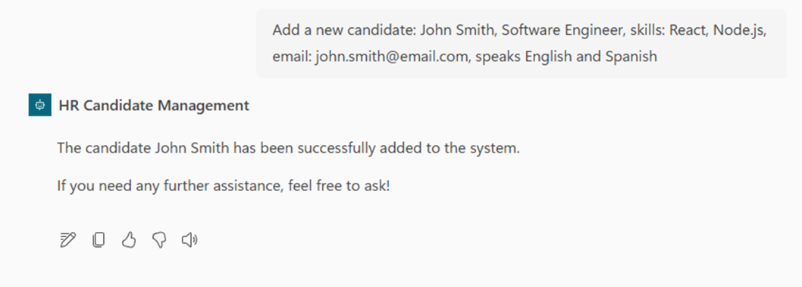

ラボ MCS6 - MCP サーバーの利用
このラボでは、Microsoft Copilot Studio で作成した エージェント を MCP (Model Context Protocol) サーバーで拡張する方法を理解します。具体的には、求人候補者のリストを管理するためのツールを提供する既存の MCP サーバーを利用します。MCP サーバーは次の機能を提供します。
- 候補者をすべて一覧表示
- 条件で候補者を検索
- 新しい候補者を追加
- 既存の候補者情報を更新
- 候補者を削除
Microsoft Copilot Studio で エージェントを構築したい場合は、これらの ラボ を実施してください
MCP について学ぶ
このラボでは MCP の概念を紹介し、Copilot Studio との統合方法を示します。MCP は AI アシスタントが外部データソースやツールに安全に接続できる新しいプロトコルです。詳細は Model Context Protocol (MCP) for beginners トレーニングクラスをご覧ください。
このラボで学ぶこと:
- 既存の MCP サーバーを構成し接続する方法
- 外部サーバーから MCP ツールとリソースを利用する方法
- MCP サーバーと Copilot Studio エージェントを統合する方法
Exercise 1 : MCP サーバーのセットアップ
この演習では、求人候補者管理機能を提供する事前構築済みの MCP サーバーをセットアップします。サーバーは Microsoft .NET をベースに MCP SDK for C# を使用しています。候補者のリストを管理するツールを提供します。ここではサーバーをダウンロードして構成し、ローカルで実行できるようにします。
Step 1: MCP サーバーと前提条件の理解
このラボで利用する HR MCP サーバーは以下のツールを提供します。
- list_candidates: 候補者の全リストを返す
- search_candidates: 名前、メール、スキル、現在の役割で候補者を検索
- add_candidate: 候補者を新規追加
- update_candidate: メールをキーに既存候補者を更新
- remove_candidate: メールをキーに候補者を削除
サーバーが管理する候補者情報:
- 個人情報 (firstname, lastname, full name, email)
- 職務情報 (spoken languages, skills, current role)
開始前に以下がインストールされていることを確認してください。
Step 2: MCP サーバーのダウンロードと起動
本ラボでは事前構築済みの HR MCP サーバーを使用します。サーバーファイルを こちら からダウンロードしてください。
ZIP を展開し、Visual Studio Code で対象フォルダーを開きます。サーバーは実装済みで、すぐに実行可能です。

プロジェクトの主な構成:
Configuration: MCP サーバーの設定を定義するHRMCPServerConfiguration.csData: 候補者リストを持つcandidates.jsonServices: リストを読み込み管理するICandidateService.csとCandidateService.csTools: MCP ツールを定義するHRTools.csとデータモデルModels.csDevTunnel_Instructions.MD: Dev tunnel で MCP サーバーを公開する手順Progam.cs: MCP サーバーを初期化するエントリーポイント
Visual Studio Code 内で新しいターミナルを開くか、ターミナルでサーバーのルートフォルダーに移動し、以下のコマンドを実行して依存関係をインストールしてビルドし、.NET プロジェクトを起動します。
dotnet run
MCP サーバーが起動していることを確認します。ブラウザーで http://localhost:47002/ にアクセスでき、JSON メッセージ内にエラーが表示されれば正常です。これは MCP サーバーに到達していることを示します。
Info
このラボに付属する HR MCP サーバーは本番環境向けではありません。メモリ内の候補者リストを使用し、会話セッションをまたいでデータを保持しません。本ラボ用に、シンプルで手軽なソリューションとして開発されました。プロフェッショナル開発者の方は、HTTP で公開された MCP サーバー構築の基礎を理解する起点としてご利用ください。コンテナーアプリ化や永続ストレージ追加などで改善することも可能です。例えば こちら に Fabian Williams (Microsoft) が実装したより高度なサーバーがあります。
Step 3: Dev tunnel の構成
次に、MCP サーバーをパブリック URL で公開する必要があります。ローカルの localhost を公開するため、リバースプロキシ ツールが必要です。ここでは Microsoft 提供の dev tunnel ツールを使用します。
- こちら の手順に従い dev tunnel をインストール
- 次のコマンドで dev tunnel にログイン
devtunnel user login
- 以下のコマンドで dev tunnel をホスト
Important
hr-mcp は一意になるよう任意の名称に置き換えてください。例えば Rose さんなら hr-mcp-rose など。Request not permitted. Unauthorized tunnel creation access ... のエラーが出た場合は、既にその名前が使われています。別の名前を指定してください。
devtunnel create hr-mcp -a --host-header unchanged
devtunnel port create hr-mcp -p 47002
devtunnel host hr-mcp
コマンドラインに接続情報が表示されます。

「Connect via browser」の URL をコピーして保存します。ブラウザーでその URL にアクセスすると、次のような確認ページが表示される場合があります。

ラボの間は dev tunnel と MCP サーバーを起動したままにしてください。再起動が必要な場合は devtunnel host hr-mcp を再実行します。
Step 4: MCP サーバーのテスト
ローカル環境で MCP サーバーをテストします。簡単のため MCP Inspector を使用します。ターミナルで次のコマンドを実行してください。
npx @modelcontextprotocol/inspector
Node.js が MCP Inspector をダウンロードして起動し、ターミナルには次のような出力が表示されます。

ブラウザーが自動起動し、次のインターフェースが表示されます。

MCP Inspector を以下の設定で構成します。
- 1️⃣ Transport type: Streamable HTTP
- 2️⃣ URL: dev tunnel の「Connect via browser」でコピーした URL
続いて 3️⃣ Connect ボタンを選択して MCP サーバーに接続します。接続が成功すると緑色の丸と Connected が表示されます。
画面の Tools セクションで 1️⃣ List Tools を選択して MCP サーバーが公開するツールの一覧を取得します。
次に 2️⃣ list_candidates ツールを選択し、3️⃣ Run tool を選択してツールを実行します。

成功すると緑色の Success メッセージとツール実行結果が表示されます。
History セクションではサーバーへの呼び出し履歴を確認できます。

これで Microsoft Copilot Studio の エージェント から MCP サーバーを利用する準備が整いました。
Exercise 2 : Copilot Studio で新しいエージェントを作成
この演習では、Exercise 1 で構成した MCP サーバーを利用する新しいエージェントを Microsoft Copilot Studio で作成します。
Step 1: 新しいエージェントの作成
ブラウザーを開き、対象 Microsoft 365 テナントの作業アカウントで https://copilotstudio.microsoft.com にアクセスします。
左ナビゲーションの Copilot Dev Camp 環境 ( Lab MCS0 - Setup Exercise 1 で作成した環境) を選択し、Create を選択して Agent を選択します。
Configure を選択し、次の設定で新しいエージェントを定義します。
- Name:
HR Candidate Management
- Description:
An AI assistant that helps manage HR candidates using MCP server integration
for comprehensive candidate management
- Instructions:
You are a helpful HR assistant that specializes in candidate management. You can help users search
for candidates, check their availability, get detailed candidate information, and add new
candidates to the system.
Always provide clear and helpful information about candidates, including their skills, experience,
contact details, and availability status.

Create を選択してエージェントを作成します。
Step 2: エージェントの会話スターターの構成
エージェント作成後、設定ページに移動します。Suggested prompts セクションに次のプロンプトを追加します。
- Title:
List all candidates- Prompt:List all the candidates - Title:
Search candidates- Prompt:Search for candidates with name [NAME_TO_SEARCH] - Title:
Add new candidate- Prompt:Add a candidate with firstname [FIRSTNAME], lastname [LASTNAME], e-mail [EMAIL], role [ROLE], spoken languages [LANGUAGES], and skills [SKILLS]

Save ボタンを選択して変更を保存します。
Exercise 3 : MCP サーバーと Copilot Studio の統合
この演習では MCP サーバーと Copilot Studio エージェントの統合を構成します。
Step 1: MCP サーバーが公開するツールの追加
エージェントで 1️⃣ Tools セクションに移動し、2️⃣ + Add a tool を選択します。

1️⃣ Model Context Protocol グループを選択し、既に利用可能な MCP サーバー一覧を表示します。2️⃣ + New tool を選択して HR MCP サーバーを追加します。

表示されたダイアログで Model Context Protocol を選択します。

続くダイアログで MCP サーバーの名前、説明、URL、認証方法を設定します。
サーバー名の例:
HR MCP Server
説明の例:
Allows managing a list of candidates for the HR department
サーバー URL には dev tunnel でコピーした [Connect via browser of your dev tunnel] を入力します。
認証方法は None を選択し、Create を選択します。

ツールが作成されると MCP サーバーへの接続を求めるダイアログが表示されます。

Not connected を選択し Create a new connection を選択して接続設定を進めます。

接続が完了したら Add and configure を選択し、MCP サーバーとツールが追加されたことを確認します。

MCP サーバーが公開するすべてのツールがエージェントで利用可能になったことを確認できます。

Step 2: MCP サーバー統合のテスト
右上の Publish を選択してエージェントを公開します。公開後、組み込みの Test パネルで次のプロンプトを試します。
List all candidates
エージェントは MCP サーバーの list_candidates ツールを使用して候補者の完全なリストを返すはずです。
ただしリストを取得するにはコネクタへの接続が必要なため、Copilot Studio から Open connection manager を求められます。MCP サーバーへ接続し、Retry してください。

接続後、HR MCP サーバーから候補者リストを取得できます。

ローカルで MCP サーバーをデバッグ
開発者の方は HRTools.cs にブレークポイントを設定し、Visual Studio Code でデバッガーをアタッチして MCP サーバーの動作を調査できます。
エージェントを Microsoft 365 Copilot Chat でも利用できるようにします。1️⃣ Channels セクションを開き、2️⃣ Teams and Microsoft 365 Copilot チャンネルを選択し、3️⃣ Make agent available in Microsoft 365 Copilot をチェックして 4️⃣ Add channel を選択します。チャンネルが有効になるまで待ち、サイドパネルを閉じたらエージェントを再度 Publish します。

再度 Teams and Microsoft 365 Copilot チャンネルを開き、See agent in Microsoft 365 を選択してエージェントを Microsoft 365 Copilot に追加します。

エージェント追加画面が表示されたら Add、続いて Open を選択し、Microsoft 365 Copilot でエージェントを試してください。
エージェントの詳細
Teams and Microsoft 365 Copilot チャンネルの設定パネルで説明やカスタムアイコンなどの詳細情報を追加できます。

Microsoft 365 Copilot でエージェントを試すと、設定した Suggested prompts が表示されます。
例として次のプロンプトを入力してみます。
Search for candidate Alice

エージェントは MCP サーバーの search_candidates ツールを使用し、検索条件に合致する候補者を 1 名返すはずです。
ただし Microsoft 365 Copilot のコンテキストでも MCP サーバーへの接続が必要なため、再度接続を行います。

接続後、プロンプトを再実行すると期待した結果が得られます。

次に、より高度な add_candidate ツールを使用して新しい候補者を追加します。次のプロンプトを入力してください。
Add a new candidate: John Smith, Software Engineer, skills: React, Node.js,
email: john.smith@email.com, speaks English and Spanish
エージェントは意図を理解し、add_candidate ツールの入力パラメーターを抽出してツールを呼び出し、新しい候補者を追加します。MCP サーバーからは確認のみが返ります。

再度候補者リストを取得すると、John Smith が末尾に追加されていることを確認できます。

他にも次のようなプロンプトで試してみましょう。
Update the candidate with email bob.brown@example.com to speak also French
または:
Add skill "Project Management" to candidate bob.brown@example.com
または:
Remove candidate bob.brown@example.com
エージェントは適切なツールを呼び出し、プロンプトに従って動作します。
お疲れさまでした！ エージェントは完全に機能し、HR MCP サーバーが提供するすべてのツールを利用できます。
おめでとうございます！
Lab MCS6 - MCP サーバーの利用 を完了しました！
こちら から Lab MCS7 に進み、Copilot Studio で自律型 エージェント の作成を学びましょう。